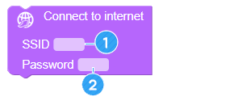
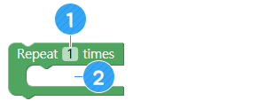
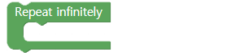
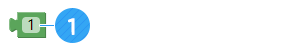
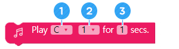

机器人告知天气
• 了解一下如何通过互联网获取天气资料。
• 可以分享天气数据中所需要反映的数据。
• 可以根据天气编制各种动作，让AsomeBot告知天气情况。
A. 如何预测天气？
卫星监测云的移动状态，持续检测温度和湿度，以预测今天及明天天气。
B. 可以让AsomeBot预报天气吗？
同您的朋友和老师一起讨论一下如何用AsomeBot预报天气。

C. AsomeBot可以通过互联网下载天气、温度、湿度等资料。能能不能利用这一点，通过AsomeBot的动作和声音来告知我们天气呢？
D. 何时、何地、如何预报天气为好？

A. Connect to internet（连接到互联网）（[INTERNET（互联网）]组）
设定AsomeBot 无线路由器的名称及密码。AsomeBot要通过互联网下载数据，因此，路由器必须连接到互联网。
① 输入互联网路由器的名称。
② 输入互联网路由器的密码。

您可以在智能手机WiFi列表中查找要用的无线路由器名称，并连接到智能手机。

B. Open UDP socket（打开UDP套接字）（[INTERNET（互联网）]组）
打开一个AsomeBot可通过互联网进行通信的端口。

① 这是要用的端口号。不要做任何的改动，原封不动地使用端口号。
C. 获取天气资料（[INTERNET（互联网）]组）
通过互联网获取有关天气的资料。
① 输入要获取天气资料的城市和国家/地区的名称。

各城市的名称值
河内（越南）：Hanoi, VN
首尔（韩国）：Seoul, KR
洛杉矶（美国）：LA, US
D. Measure distance（测量距离）（[SENSOR（传感器）]组）
用超声波传感器检测与前方障碍物的距离。测量距离的数值存储于名为“Cm”的变量。当人在适当的距离站立或者经过时，传感器就可以用来告知天气。

E. Repaeat（重复）（[ADVANCE（逻辑条件）]组）
根据需要多次重复区块中的命令。
① 指定重复的次数。
② 添加重复的程序块。
F. Repeat infinitely（无限重复）（[ADVANCE（逻辑条件）]组）
按顺序持续运行区块中的程序块。
G. if（如果） ([ADVANCE（逻辑条件）] 组)
所输入的条件正确时，运行区块中的程序块。如果条件不正确，就会运行if区块之后的程序块。

① 输入用于条件语句的变量。默认值为“i”，使用超声波传感器时更改为“cm”。
② 选择比较条件的标准不等式。
③ 输入用于条件的默认值。此为您需要添加指定条件值的区块。
④ 添加条件正确时要运行的程序块。
H. Data Block（数据区块）、Character Value Block（字符值区块）（[ADVANCE（逻辑条件）]组）
您可以在如下两个区块当中选择一个作为条件语句的条件值。
在数据区块，输入可供比较的数值。
① 输入Data Value（数据值），并与条件语句的变量进行比较。

将通过互联网获取的Character Value（字符值）或所输入的字符作为Conditional value（条件值）的时候，使用Character Value Block（字符值区块）。
① 输入用作条件值的字符。
有关天气的Character Value（字符值）
可以通过互联网获取的天气相关Character Value（字符值）如下：
雨天：rain（雨）
晴天：sunny（晴）
雪天：snow（雪）
编制一个通过互联网下载的今天天气值为“晴天”时按顺序分别播放“Do”“Re”“Mi”音各1秒钟的程序。
I. Break (停止)（[ADVANCE（逻辑条件）]组）
当运行无限重复程序时选择此区块，就会停止无限重复并执行其之后代码指令。

编制一个当AsomeBot前方50厘米以内有人或物体时执行[Flap（拍脚）]3次的程序。
J. Attention（立正）（[BASIC（基础）]组）
脚部动作幅度大的时候如果继续其他动作，AsomeBot就会跌倒。每次动作之间插入[Attention（立正）]使AsomeBot立正，就会防止跌倒。

K. Dance Moves without Option（单个舞蹈动作）（[DANCE（舞蹈）]组）

AsomeBot用脚尖站着做Ballet（芭蕾舞）般的动作。

AsomeBot在原地踏步。
AsomeBot拍脚。

AsomeBot用脚执行Warigari。（改为：做出双脚在地上来回蹭的动作）
AsomeBot抬起脚尖。是与[Ballet（芭蕾舞）]相反的动作。

AsomeBot走太空步。
L. Dance Moves with Option（带选项的舞蹈动作）（[DANCE（舞蹈）]组）
所有舞蹈动作选项均选择的是AsomeBot移动的脚部方向。

AsomeBot抬起一只脚做出动作。

AsomeBot抬起一只脚向后弯曲。

Asomebot向后弯曲一只脚，并摇动一下。
M. Buzzer on（蜂鸣器打开）（[SOUND（声音）]组）
将蜂鸣器保持在激活的状态。运行此区块，才能使用蜂鸣器。请注意，不运行此程序块就不能激活蜂鸣器。
N. Buzzer off（蜂鸣器关闭）（[SOUND（声音）]组）
关闭蜂鸣器使用状态，允许使用其他部件。蜂鸣器为激活状态时，不能使用其他部件。播放声音后必须使用此程序块，才能运行其他部件。

O. Play for（控制声音）（[SOUND（声音）]组）
利用此程序块，您就可以用频率发出想发的声音。
① 从列表中选择要播放的音阶。
② 从列表中选择要播放的音阶八度音。
③ 设定播放声音的时间。
A. 游戏规则
① 谈谈何时如何开始天气预报比较好。
② 谈谈AsomeBot表达天气的方法。
③ 谈谈除了天气（温度、湿度和沙尘）以外还可以预报哪些信息。
④ 谈谈除了天气以外还可以通过互联网获取哪些信息进行预报。
B. 算法
① 设置为通过互联网下载天气资料。
② 编制根据天气执行的动作。
③ 确定满足何种条件时预报天气，并编制相应程序。
④ 编制一个满足条件时根据天气执行某种动作的程序。
⑤ 添加程序使之变得丰富有趣。

C. 编制天气预报程序后展示